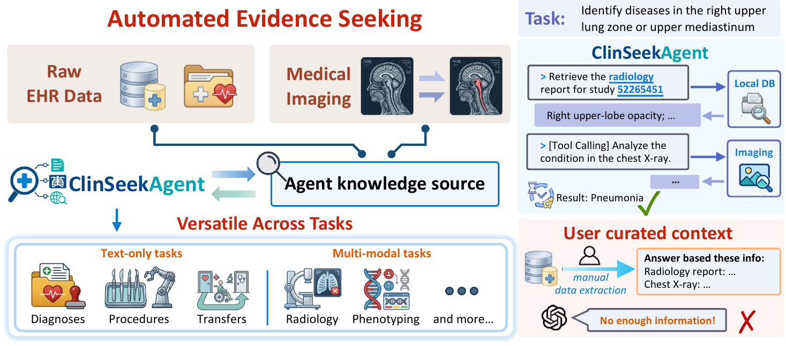
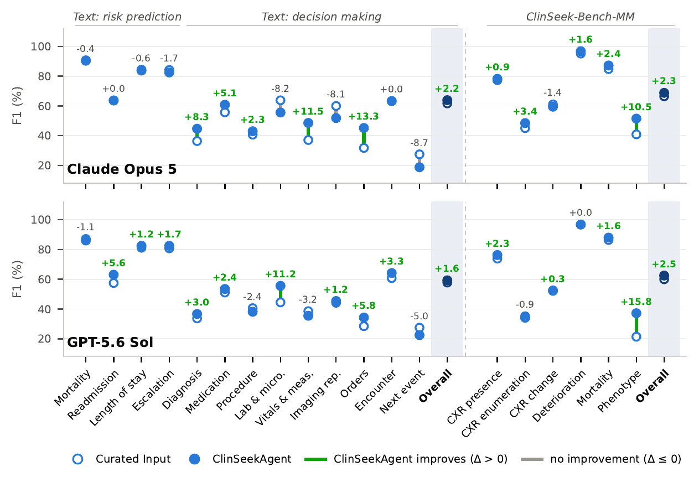
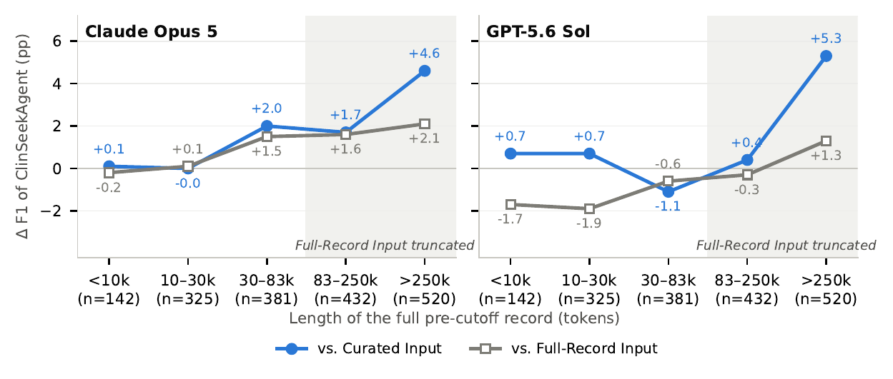
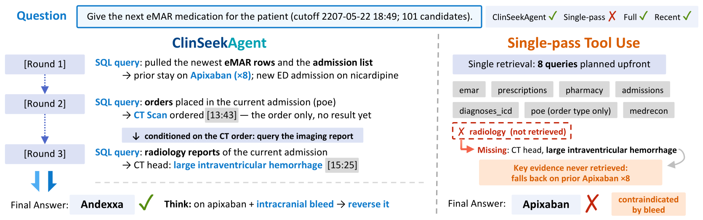
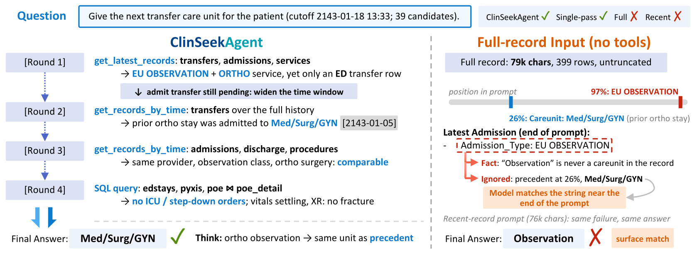
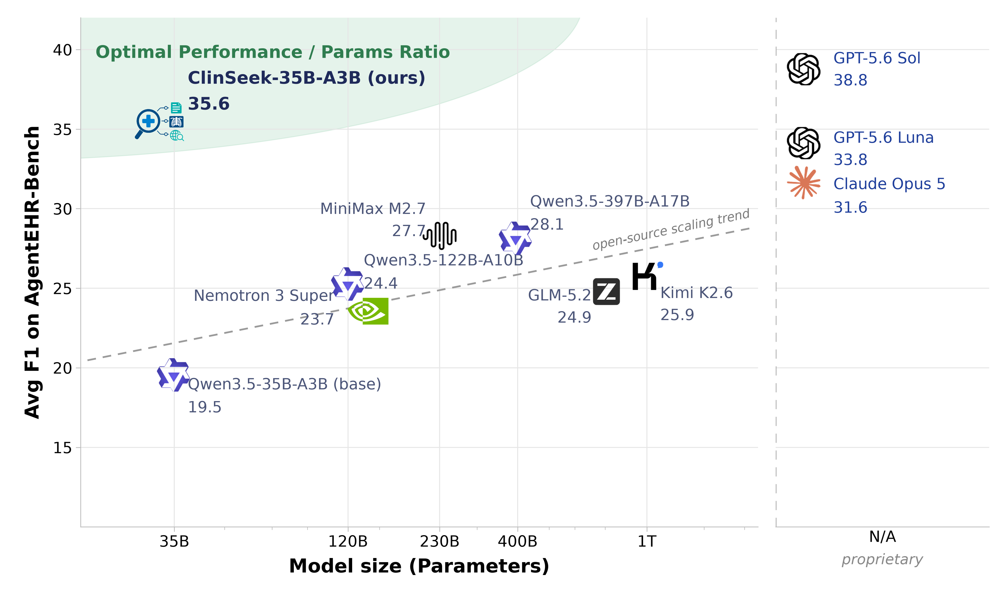

Automating Multimodal Evidence Seeking
for Agentic Clinical Reasoning
From passive evidence consumption to active evidence acquisition. Real-world clinical workflows require agents to actively seek, iteratively plan, and synthesize multimodal evidence from heterogeneous sources.
Juncheng Wu1*,
Letian Zhang1*,
Yuhan Wang1*,
Haoqin Tu1,
Hardy Chen1,
Zijun Wang1,
Cihang Xie1,
Yufan He2,
Can Zhao2,
Daguang Xu2,
Yucheng Tang2,
Yuyin Zhou1
1University of California, Santa Cruz 2NVIDIA
*Equal technical contribution · Corresp. jwu418@ucsc.edu

Large language models (LLMs) and agentic systems have shown promise for clinical decision support, but existing works largely assume that evidence has already been curated and handed to the model. Real-world clinical workflows instead require agents to actively seek, iteratively plan, and synthesize multimodal evidence from heterogeneous sources. In this paper, we introduce ClinSeekAgent, an automated agentic framework for dynamic multimodal evidence seeking that shifts the paradigm from passive evidence consumption to active evidence acquisition. Given a clinical task and access to raw patient data, ClinSeekAgent queries longitudinal EHR records and invokes imaging analysis tools when relevant; refines its hypotheses as new information emerges; and integrates the collected evidence into grounded clinical decisions. We validate ClinSeekAgent in two roles: as an inference-time agent for frontier LLMs and as a training pipeline for open-source models.
For inference-time validation, we construct ClinSeek-Bench, which covers 13 text-only EHR task categories and 6 multimodal EHR–chest X-ray task categories, and pairs each question with both a Curated Input of pre-selected evidence and the raw patient data for automated evidence seeking. Without any benchmark-specific curation, ClinSeekAgent significantly outperforms curated input for both Claude Opus 5 and GPT-5.6 Sol, improving overall F1 from 61.7 to 63.9 and from 57.8 to 59.3 on text-only EHR tasks, and from 66.5 to 68.8 and from 60.0 to 62.5 on multimodal tasks. The largest gains occur in text-based decision-making and multimodal phenotype prediction, and ablations show that they come from multi-round evidence seeking rather than from access to more of the patient record.
For training-time validation, we fine-tune Qwen3.5-35B-A3B on ClinSeekAgent trajectories generated by GPT-5.6 Sol. The resulting ClinSeek-35B-A3B reaches 35.6 average F1 on AgentEHR-Bench (+16.1 over its base model), outperforming all evaluated open-source models, including ones more than ten times larger, as well as Claude Opus 5.
What changes when the agent seeks its own evidence instead of receiving a curated package.
Without benchmark-specific curation, ClinSeekAgent significantly raises overall F1 for both frontier models on both benchmarks: Claude Opus 5 61.7 → 63.9 (text) and 66.5 → 68.8 (multimodal); GPT-5.6 Sol 57.8 → 59.3 and 60.0 → 62.5. The largest gains are on text decision making and multimodal phenotype prediction.
Putting the full record in the prompt adds only +0.8 / +1.9 (text) and +0.1 / +0.3 (multimodal) over Curated Input (Opus 5 / Sol), and single-pass retrieval gives no significant gain. Making retrieval iterative adds +5.4 / +1.7 (text) and +6.1 / +1.4 (multimodal) over single-pass retrieval.
Below 30k tokens of patient record, ClinSeekAgent is on par with both prompt-based settings. On records above 250k tokens, its margin over Curated Input reaches +4.6 (Opus 5) and +5.3 (Sol).
Fine-tuned on GPT-5.6 Sol trajectories, ClinSeek-35B-A3B reaches 35.6 average F1 on AgentEHR-Bench (+16.1 over its base), outperforming all evaluated open-source models and Claude Opus 5 (31.6), at 92% of its teacher (38.8).
Each task gives the agent a patient identifier, a prediction time, and an instruction, but not the curated patient context. The agent then runs an open-ended trajectory τ = (x, (ak, ok)k=1..K, ŷ) of tool calls and observations, for up to 200 rounds, before calling finish with its answer. ClinSeekAgent standardizes the environment and tool interface; it imposes no ordering over evidence sources, so the evidence-seeking policy comes from the model.
Patient-specific access to the raw record through schema exploration; time-, keyword-, and value-based retrieval; SQL; and candidate-term lookup, plus think and finish.
Visual evidence from chest radiographs through DICOM preprocessing, image visualization, chest X-ray classification, report generation, phrase grounding, and anatomical segmentation.
ClinSeek-Bench-Text uses the 16 EHR tools; ClinSeek-Bench-MM uses all 22.
Each question gets a question-specific view of the record that keeps only what was available before the prediction time, and every EHR tool (including SQL) and every Curated Input prompt reads from this same view. Diagnosis and procedure codes become available only 24 hours after their encounter ends, and the codes of the encounter being predicted are always hidden. A linked chest X-ray is visible only if acquired before the cutoff, and its report only if finalized by then.
Every question appears in two settings with the same task definition and answer label: Curated Input, the evidence package of the source benchmark, and Automated Evidence-Seeking, where that context is removed and the model must retrieve evidence from the raw data with ClinSeekAgent tools.
40 per subtask from the 45 EHR-Bench subtasks over MIMIC-IV, grouped into 13 categories: 4 risk prediction, 9 decision making.
Reconstructed from EHRXQA and MedMod, which pair MIMIC-IV EHRs with MIMIC-CXR chest radiographs, in 6 categories.
| Text category | N | Predict |
|---|---|---|
| Risk prediction | ||
| Mortality | 280 | In-hospital death, or death within 1, 2, 3, 7, or 14 days in the ICU |
| Readmission | 160 | ED return within 72 hours, ICU readmission, or hospital readmission within 30 or 60 days |
| Length of stay | 160 | ICU stay over 7 or 14 days, or hospital stay over 3 or 7 days |
| Escalation of care | 120 | Hospitalization from the ED, ICU transfer within 12 hours, or a critical outcome |
| Decision making | ||
| Diagnosis | 160 | Next diagnoses, as ICD titles or CCS categories |
| Medication | 320 | Next administered medications, prescriptions, ED medication items, and ICU inputs |
| Procedure | 120 | Next procedures and ICU procedure items |
| Laboratory & microbiology | 80 | Next laboratory and microbiology tests |
| Vitals & measurements | 160 | Next ICU charted and output items, and outpatient measurements |
| Imaging report | 40 | Next radiology examination |
| Orders | 40 | Type of the next provider order |
| Encounter & flow | 120 | Next admission type, clinical service, and transfer care unit |
| Next event | 40 | EHR table of the next event |
| Multimodal category | N | Task (source) |
|---|---|---|
| CXR finding presence | 215 | Is a finding present in a chest X-ray study? (EHRXQA) |
| CXR finding enumeration | 182 | List the findings of a study (EHRXQA, MedMod) |
| CXR change comparison | 222 | How findings change between two studies (EHRXQA) |
| Clinical deterioration | 125 | ICU death within the next 24 hours (MedMod) |
| Mortality | 125 | Death during the current ICU stay (MedMod) |
| Phenotype | 120 | Acute and chronic conditions of an ICU stay (MedMod) |
Sample-wise F1 (%) over the predicted and gold label sets, averaged over questions; for single-label questions it reduces to accuracy. All comparisons are paired on questions, with paired-bootstrap 95% confidence intervals.
Same questions, same labels; only the way evidence reaches the model changes. Both modes use the same reasoning budget and one run per question.
The pre-selected evidence is rendered into the prompt (for EHR-Bench, up to 100 events from the past 24 hours) and the model answers directly, without tools.
Given only the patient identifier and the prediction cutoff, the model retrieves evidence from the raw record with the tools above for up to 200 rounds before calling finish.
Overall F1 (%), Curated Input → ClinSeekAgent; Δ is the mean per-question difference, and every paired-bootstrap 95% CI excludes zero.

Click a tab to switch models. Full-Record Input and Single-Pass Retrieval are the ablation settings described below.
ClinSeekAgent differs from Curated Input in two ways: it can access the whole record instead of a curated window, and it gathers evidence over multiple rounds of tool calls and reasoning. Two ablation settings extend record access without the multi-round loop; all four settings share the same temporal policy.
Curated Input with the patient's full pre-cutoff record in the prompt, truncated oldest-first when it does not fit the 100k-token context window.
ClinSeekAgent with the same tools and record access, but all retrieval calls must be issued in one turn before answering.

Over five runs of GPT-5.6 Sol, the standard deviation of overall F1 is at most 0.4 points within each mode, ClinSeekAgent beats Curated Input in every run, and Krippendorff's α of per-question F1 across runs is 0.87–0.91.
Models with stronger agentic capability benefit more. For Claude Opus 4.6, GLM-5.2, and Kimi K2.6, all three stay within two points of Curated Input overall on text; on multimodal, Claude Opus 4.6 gains +5.1 (mostly on phenotype) and Kimi K2.6 +2.0, and only the gain of Opus 4.6 is significant.
Two questions where ClinSeekAgent answers correctly and an ablation setting does not.


The gain of ClinSeekAgent is consistent only for models with strong agentic capability, so we use it as a training pipeline to transfer this capability to a smaller open model. GPT-5.6 Sol runs ClinSeekAgent on the 3,000 questions of the AgentEHR-Bench training split, and Qwen3.5-35B-A3B is fully fine-tuned on the resulting trajectories, with the teacher's reasoning in the student's native thinking block and tool calls in its native format.
ClinSeek-35B-A3B improves on all five tasks, from +7.6 on Microbiology to +23.9 on Labs; it beats Qwen3.5-397B-A17B, with about eleven times more parameters, by +7.5, exceeds Claude Opus 4.6 by +2.4 and Claude Opus 5 by +4.0, and reaches 92% of its teacher (35.6 vs. 38.8), matching it on Transfers (27.4 vs. 27.3). Evaluation uses 100 test questions per task, none of which appears in the training data; all models run ClinSeekAgent with the same tools and temporal policy.

Over the 500 AgentEHR-Bench trajectories, both precision (18.6 → 32.4) and recall (31.1 → 53.3) improve over the base model, accompanied by two changes in behavior.
SQL with joins, aggregation, or time filters; it typically first summarizes what the record contains and then drills into the current admission.
The student surveys the record before narrowing down.
Base model (Qwen3.5-35B-A3B) → ClinSeek-35B-A3B. The student learns the evidence-seeking process, not only its final answers.
@misc{wu2026clinseekagent,
title = {ClinSeekAgent: Automating Multimodal Evidence Seeking for Agentic Clinical Reasoning},
author = {Wu, Juncheng and Zhang, Letian and Wang, Yuhan and Tu, Haoqin and Chen, Hardy and Wang, Zijun and Xie, Cihang and He, Yufan and Zhao, Can and Xu, Daguang and Tang, Yucheng and Zhou, Yuyin},
year = {2026},
eprint = {2605.20176},
archivePrefix = {arXiv},
primaryClass = {cs.CL},
url = {https://arxiv.org/abs/2605.20176}
}Preprint: arXiv:2605.20176.